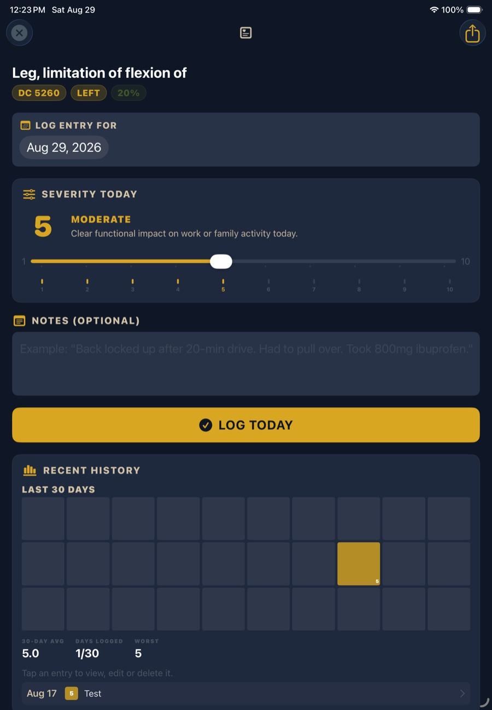
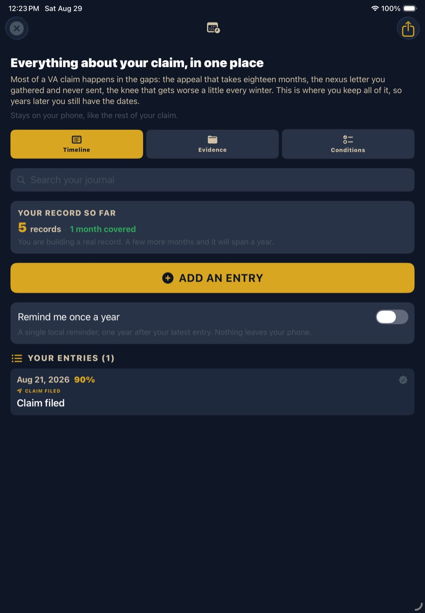
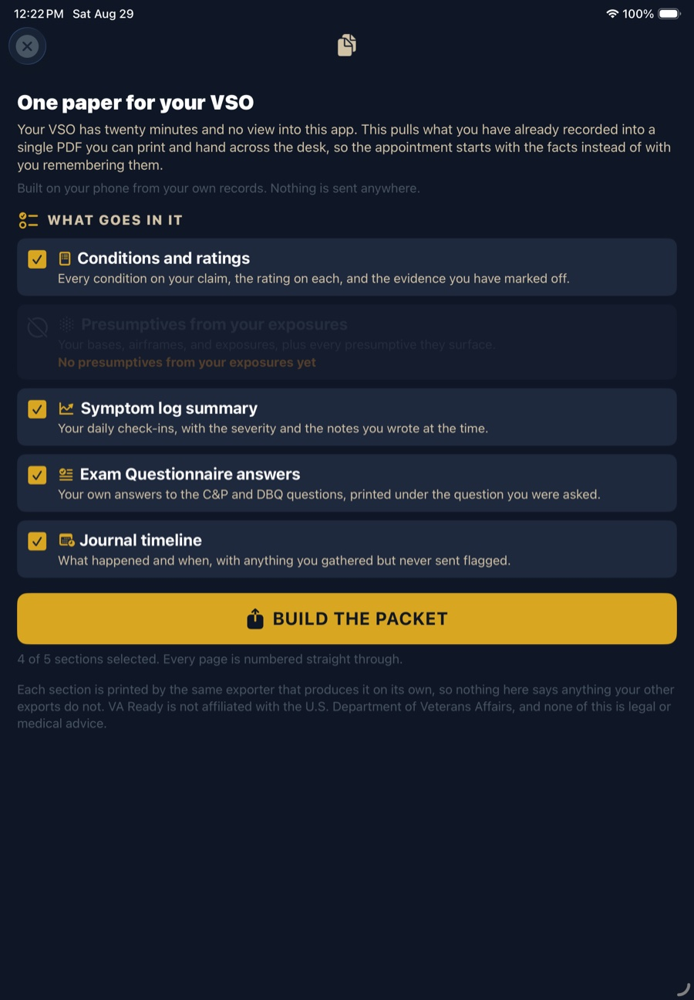
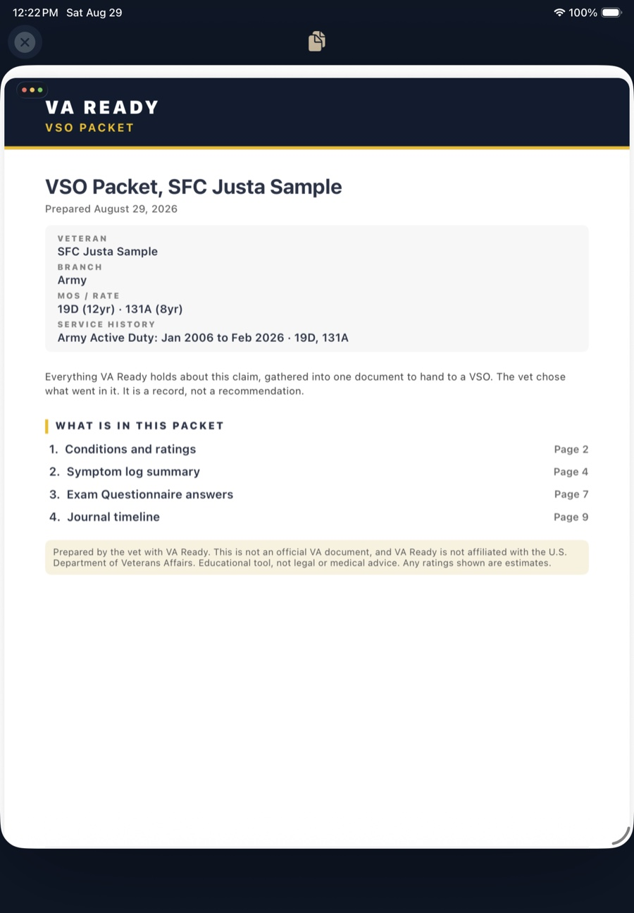
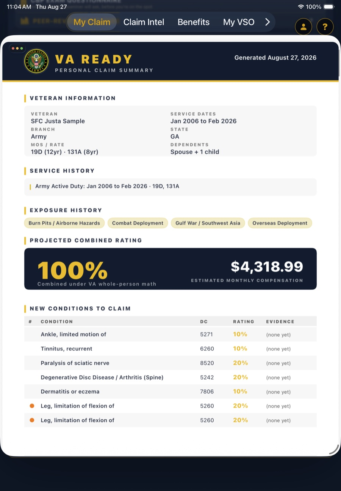

Almost every veteran who files does the same thing: gathers what they can, shows up, and tries to recall years of history out loud in a twenty minute appointment. The claim then turns on whatever made it onto paper.
The fix is boring and it works. Write things down on the day they happen, keep the dates, and bring it printed. Below is each piece, and the screen in VA Ready that produces it.
1. A dated symptom log
Free in the appThe single highest-value habit for anyone claiming a condition that comes and goes. Migraines, back pain, PTSD, IBS, sleep apnea, knee and shoulder flare-ups: these are rated on how often and how badly they hit you, and a one-hour exam cannot see that pattern.

Log the day it happens, in your own words. "Back locked up after a 20 minute drive, had to pull over" is worth more than a number alone, because it describes functional impact, which is the language the rating criteria are written in.
2. A claim journal for everything else
Free in the appMost of a claim happens in the gaps. The appeal that takes eighteen months. The nexus letter you paid for and never sent. The exam you attended in March. Years later, the dates are what decide effective dates and deadlines, and nobody remembers them accurately.

3. One packet for your VSO
Pro featureA VSO is free, accredited, and genuinely on your side, and they are also carrying a full caseload with about twenty minutes for you and no view into your notes. What you hand them at the start of that appointment largely determines what it produces.


The cover lists each period of service separately with its branch and component. That matters: Active Duty, Reserve and Guard time are treated differently under 38 CFR 3.6, and a rep cannot apply that if your service is collapsed into one date range.
4. A claim summary you can hand to anyone
Pro featureShorter than the full packet and useful on its own: everything about where your claim stands, on a few pages.

What this is, and what it is not
VA Ready keeps all of it on your device. The log, the journal and your claim data are not uploaded to a server, and the PDFs are built on your phone and shared only when you choose to share them.
Start with the free half
The symptom log, the claim journal, the calculator and the condition guides are free. The packet builder and the PDF exports are Pro. Most veterans start logging months before they need to hand anything to anyone, which is exactly the right order.
Common questions
Does a symptom log actually help a VA claim?
It helps most for conditions that come and go. Raters and C&P examiners assess frequency and severity over time, and a single exam captures one day. A dated log covering 30 to 90 days shows the pattern that one appointment cannot, which matters for migraines, back pain, PTSD, IBS and other flare-up conditions. It is your own record, so it supports your file rather than replacing treatment records.
What should I bring to a VSO appointment?
Your conditions with diagnostic codes and current ratings, any presumptives your exposures raise, a dated symptom record, your answers to the C&P and DBQ questions in your own words, and a timeline of what you have filed and received. A VSO has roughly twenty minutes and no view into your notes, so arriving with it printed means the appointment starts with facts instead of recall.
How do I keep track of a claim that takes months?
Keep a running journal with dates: when you filed, when each letter arrived, when you attended an exam, and what you gathered but have not yet sent. Appeals routinely run past a year, and those dates drive effective dates and deadlines. Recording them as they happen beats reconstructing them later.
Is my symptom log and claim journal private?
Yes. Your log, journal and claim data stay on your device and are not uploaded to a server. Exports are generated on your phone and shared only when you choose to share them.
Can I use this instead of medical records?
No. Your service treatment records, VA and private treatment records, and any nexus opinion are the evidence that carries a claim. A log and journal are your own account. They support the file and help you prepare, but they do not replace medical evidence.
Next: see the 38 CFR criteria behind each rating → · estimate your back pay →